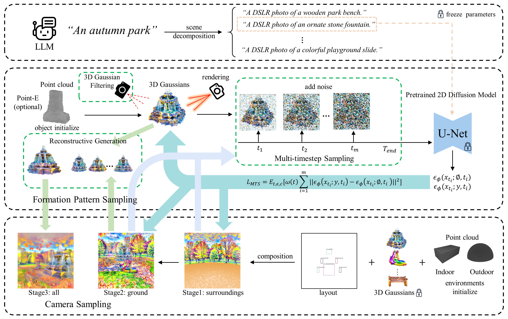

DreamScene: 3D Gaussian-based Text-to-3D Scene Generation via Formation Pattern Sampling
ECCV 2024, Milan
Haoran Li1, 2, Haolin Shi1, 2, Wenli Zhang1, 2, Wenjun Wu1, 2, Yong Liao1, 2*, Lin Wang3, Lik-Hang Lee4, Peng Yuan Zhou5*
1 University of Science and Technology of China
2 CCCD Key Lab of Ministry of Culture and Tourism
3 AI Thrust, HKUST(GZ) and Dept. of Computer Science Eng., HKUST
4 The Hong Kong Polytechnic University
5 Aarhus University
Abstract
Text-to-3D scene generation holds immense potential for the gaming, film, and architecture sectors. Despite significant progress, existing methods struggle with maintaining high quality, consistency, and editing flexibility. In this paper, we propose DreamScene, a 3D Gaussian-based novel text-to-3D scene generation framework, to tackle the aforementioned three challenges mainly via two strategies. First, DreamScene employs Formation Pattern Sampling (FPS), a multi-timestep sampling strategy guided by the formation patterns of 3D objects, to form fast, semantically rich, and high-quality representations. FPS uses 3D Gaussian filtering for optimization stability, and leverages reconstruction techniques to generate plausible textures. Second, DreamScene employs a progressive three-stage camera sampling strategy, specifically designed for both indoor and outdoor settings, to effectively ensure object-environment integration and scene-wide 3D consistency. Last, DreamScene enhances scene editing flexibility by integrating objects and environments, enabling targeted adjustments. Extensive experiments validate DreamScene's superiority over current state-of-the-art techniques, heralding its wide-ranging potential for diverse applications.
Text-to-3D (Scenes)
High quality, scene-wide 3D consistency, scene editing flexibility, accommodating a vast number of objects.
| A DSLR photo of a living room | A DSLR photo of an European style kitchen | A DSLR photo of a cyberpunk style bedroom, cyberpunk style | A DSLR photo of an Ukiyo-e style bedroom, Ukiyo-e style |
| Gray land at the moon, black tranquil universe in the distance, Sci-fi style | A minecraft cubes world with lake and mountains in the far distance and grass cubes in the near distance | A DSLR photo in the open area of the zoo | A DSLR photo of an autumn park |
Text-to-3D (Objects)
Quickly form semantically rich, high-quality representations.
| A delicious hamburger | A wooden car | A DSLR photo of A car made out of sushi | A DSLR photo of a highly-detailed sandcastle | A DSLR photo of A Stylish Air Jordan shoes | A DSLR photo of a mushroom house |
| A DSLR photo of an ornate stone fountain | A DSLR photo of a potted plant with yellow flowers | A DSLR photo of a log-coloured bed, minecraft style | A DSLR photo of a standing peacock with colorful tail feathers | Mini Garden, highly detailed, 8K, HD | A zoomed-out DSLR photo of a model of a house in Tudor style |
| DSLR photo of the Batman flying in sky, realistic style | A silver platter piled high with fruits | A 20-sided die made out of glass | A blue motorcycle | A pillow with huskies printed on it | A DSLR photo of a red pickup truck |
Scene Editing
Manipulating the scenes.
Approach
We primarily employ Formation Pattern Sampling, which includes multi-timestep sampling, 3D Gaussian filtering and reconstructive generation to rapidly produce high-quality and semantically rich 3D representations with plausible textures and low storage demands. Additionally, DreamScene ensures scene-wide consistency through camera sampling and allows for flexible editing by integrating objects with the environments in the scene.
Video
Citation
@article{li2024dreamscene,
title={DreamScene: 3D Gaussian-based Text-to-3D Scene Generation via Formation Pattern Sampling},
author={Li, Haoran and Shi, Haolin and Zhang, Wenli and Wu, Wenjun and Liao, Yong and Wang, Lin and Lee, Lik-hang and Zhou, Pengyuan},
journal={arXiv preprint arXiv:2404.03575},
year={2024}
}